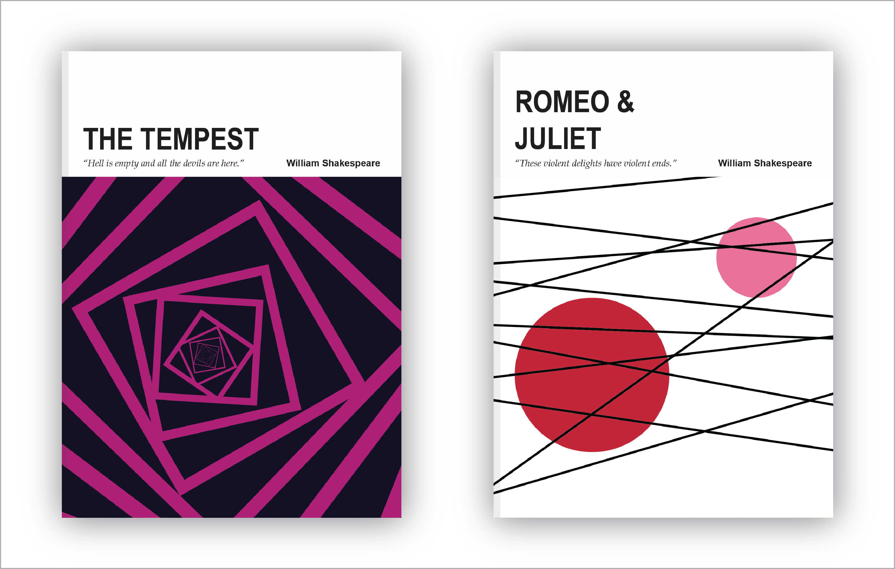

Designing a set of artifacts has always been an interest of mine. I love the way a set of books look on a shelf with their similar covers or the way the images of a calendar may have the same color scheme or composition as you flip through its pages; each individual unit is like a sibling in relation to the others: alike, but distinct. The cohesiveness of it all, the understanding that all of these different objects belong together, is what draws me in the most. I engaged with this project as a means of exploring my fascination and as an opportunity to hone my skills.
For the subject of this project, I chose the works of William Shakespeare. I thought that they would be an appropriate subject since they are often thought of in context of each other; it is difficult to think about a Shakespeare tragedy and think of Hamlet alone.
The works that I chose were Macbeth, Romeo and Juliet, A Midsummer Night’s Dream, Othello, Hamlet, and The Tempest. They were chosen in particular because I was able to visually imagine what they would look like. While reading their plots, images were popping up in my head and I wanted to capture their essence rather than depict them literally which is why I consider my designs as abstract interpretations of the works. I chose this method of designing instead of creating more literal or realistic images because I did not want to alienate readers. Making depictions too literal makes it difficult for readers to project themselves onto the story. The characters and events are perceived as things that happen to people outside of themselves rather than an extension of themselves. Since a play is meant to be performed, where people are becoming the characters, I felt it important that I maintain this sense of being a part of the plot rather than simply observing it.


As for the design of the artifacts, I wanted to incorporate the same visual structure with each one so that it is understood that they are meant to exist together as a set. I created this structure by roughly dividing the cover in half with the top half containing a quote from the work, its title, and author, and the bottom half depicting my abstract visual interpretation of the work. I felt that this was a stable method of communicating important information without giving too much away.
For the visual interpretations, I wanted to use a minimal color palette to avoid looking busy. I structured the designs by using a solid colored background paired with a main “subject” that uses a complimentary color which draws people in and creates interest. Here's a closer look.